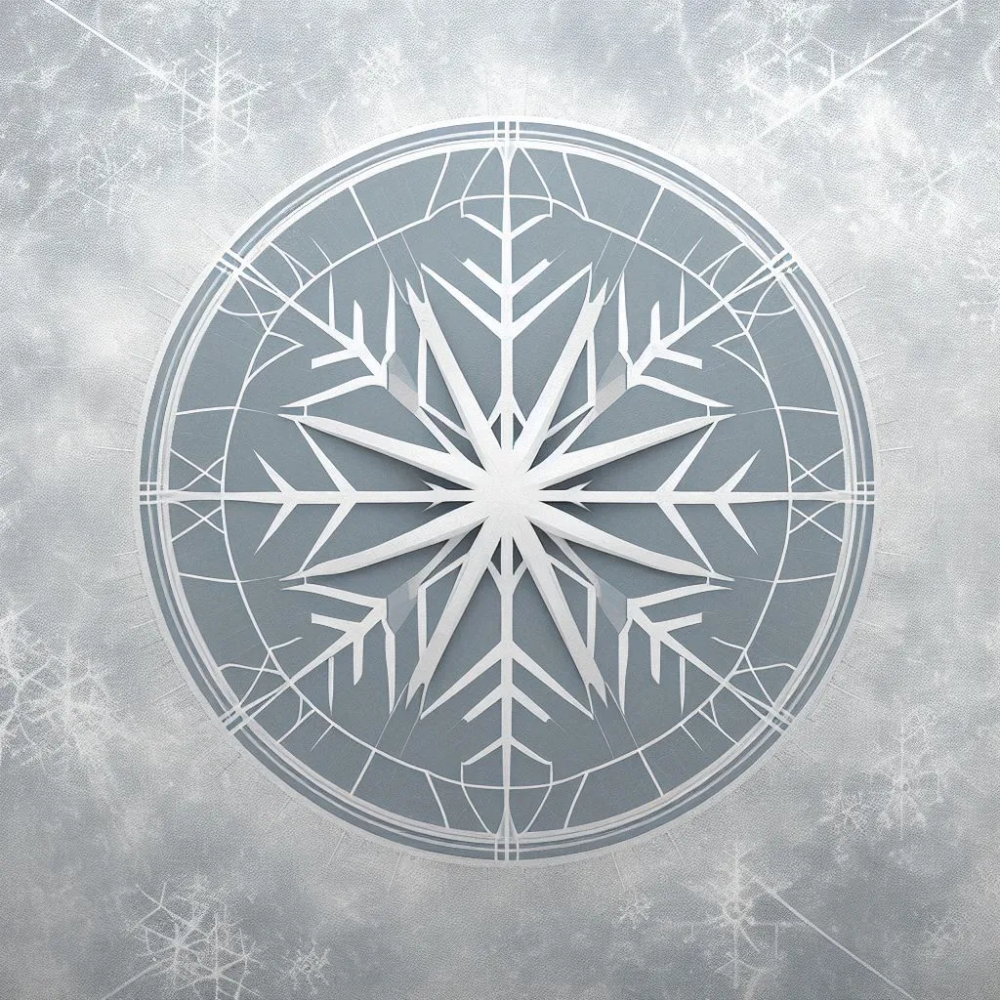

Extensão
Região de Glaciaris
- Ano
- Extensão
- Unidade
- RPG Educacional
- Tipo
- Material
- Disciplina
- Biologia
- Nível
- Extensão
Em planejamento
1. História e Mitos
- Lendas e Mitos: Conta-se que Glaciaris foi fundada por um antigo herói que domou o frio primordial para proteger seu povo de uma catástrofe de fogo. Sua história é marcada por batalhas lendárias contra invasores e traidores, e seu legado é celebrado em mitos sobre a construção da Grande Muralha de Gelo, que protege a casa dos perigos externos.
- Eventos Históricos: A Grande Guerra do Gelo, um conflito que quase destruiu Glaciaris, é um evento crucial. A vitória dos habitantes, obtida com um artefato antigo, fortaleceu seu domínio e estabeleceu a sua supremacia sobre os territórios congelados.
2. Cultura e Sociedade
- Tradições e Festividades: Glaciaris celebra o Festival do Neve Eterna, onde os habitantes oferecem tributos a um antigo espírito do inverno em uma cerimônia que inclui danças ao redor de fogueiras de gelo. Outra tradição é o Ritual da Primeira Neve, que marca o início do inverno e é acompanhado de uma grande festa.
- Línguas e Dialetos: Os habitantes falam o “Glacian,” uma língua suave e sibilante que imita o som do vento cortante e do gelo se quebrando.
3. Estrutura Política e Social
- Sistema de Governo: Glaciaris é governada por uma monarquia absoluta, com um "Rei do Gelo" que é considerado o guardião da Grande Muralha. A corte é composta por nobres que servem como conselheiros e defensores das fronteiras.
- Hierarquia Social: A sociedade é dividida entre os Nobres do Gelo, que governam e protegem a casa, e os Povo da Geada, que são os trabalhadores e agricultores que mantêm as cidades e produzem os recursos necessários.
4. Geografia e Locais Notáveis
- Cidades e Fortalezas: A cidade principal é "Frígida," uma metrópole de gelo com estruturas esculpidas em blocos de gelo e cristal. A Fortaleza da Muralha de Gelo, uma imponente construção de gelo encantado, é o ponto de defesa e símbolo de Glaciaris.
- Marcos Naturais: Glaciaris é marcada por vastas geleiras e montanhas cobertas de neve. O Lago dos Cristais, um lago de água gelada com uma superfície refletiva, é um local sagrado e ponto de contemplação para os habitantes.
5. Economia e Recursos
- Recursos Naturais: Glaciaris possui abundantes depósitos de cristais de gelo, que são usados tanto para magia quanto para construção. O minério de gelo é também crucial para a construção de armas e armaduras.
- Comércio e Relacionamentos: Glaciaris negocia cristais de gelo e artefatos mágicos com outras casas. Seus comerciantes são especializados em manter relações comerciais seguras e vantajosas, mesmo em um ambiente hostil.
6. Religião e Crenças
- Deuses e Cultos: Os habitantes de Glaciaris adoram "Ymir," o espírito do inverno e da frieza. Ymir é considerado um protetor da casa e a principal figura na mitologia local.
- Rituais e Sacerdotes: Os sacerdotes do gelo realizam rituais para garantir a proteção da casa e a abundância de recursos. Eles também são responsáveis por conduzir cerimônias que mantêm o equilíbrio entre o frio e a vida.
7. Tecnologia e Magia
- Avanços Tecnológicos: Glaciaris possui tecnologia baseada em gelo, como engenhocas de resfriamento e fortificações encantadas para resistir a invasões. Eles também desenvolveram métodos avançados para a criação e controle de gelo e neve.
- Sistema de Magia: A magia em Glaciaris é focada na manipulação do gelo e do frio. Magos da casa são capazes de criar tempestades de neve, erguer paredes de gelo e congelar seus inimigos com um gesto.
8. Personagens e NPCs
- Heróis e Vilões: "Rei Thoran," o atual governante, é um líder sábio e firme que venceu a Grande Guerra do Gelo. Entre os vilões, há rumores de um traidor conhecido como "O Traidor da Geada," que tentou desestabilizar a casa.
- Figuras Locais: "Lady Freyja," a conselheira de guerra, é uma estrategista habilidosa, e "Magister Elric," o líder dos magos do gelo, é um mentor respeitado.
9. Relacionamentos e Conflitos
- Rivalidades e Alianças: Glaciaris tem uma rivalidade histórica com a Casa do Sol, que busca expandir suas terras e frequentemente entra em conflito com Glaciaris. Eles têm uma aliança tensa com a Casa Elementara, baseada na necessidade mútua de equilíbrio entre os elementos.
- Conflitos Internos: Dentro da casa, há disputas sobre a sucessão do trono e o papel da magia no governo. As facções internas podem se tornar um ponto de tensão significativo.
10. Arte e Simbolismo
- Símbolos e Heráldica: A bandeira de Glaciaris apresenta um floco de neve estilizado, representando o domínio do gelo. O símbolo é adornado com cristais de gelo que brilham à luz da lua.
- Arquitetura e Design: A arquitetura de Glaciaris é caracterizada por edifícios esculpidos em gelo e pedra, com intrincados padrões que refletem a beleza e a complexidade do ambiente gelado.
